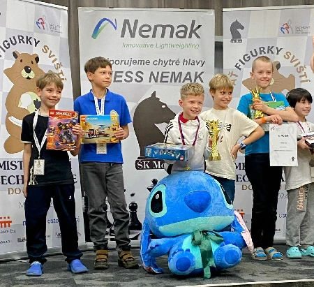
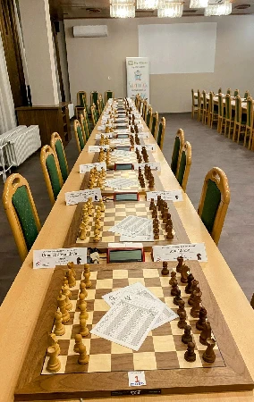

Byli jsme na Mistrovství republiky..
Minulý týden se od středy 13.11. do neděle 17.11. v Mostu konalo Mistrovství České republiky v šachu dětí do 8 a 10 let. Turnaj přilákal mladé šachové talenty z celé republiky a nabídl skvělé sportovní výkony.
Atmosféra na turnaji byla vynikající, organizátoři odvedli skvělou práci a účastníci si pochvalovali jak hladký průběh soutěže, tak příjemné prostředí. Z našeho klubu se představilo hned 11 hráčů. Nejvíce zazářil Honza Urbánek, který si v kategorii H10 po výborném výkonu s celkovým ziskem 8/9 bodů odvezl zasloužené 1. místo. Jeho úspěch je inspirací pro ostatní a důkazem, že tvrdá práce a vášeň pro šachy přináší své ovoce.
Děkujeme všem organizátorům, trenérům, rodičům a samozřejmě dětem za krásné šachové dny plné napětí a radosti. Těšíme se na další podobné akce, které budou dále rozvíjet šachové nadání našich nejmladších hráčů.
Honzovi moc gratulujeme k titulu a všem účastníkům děkujeme za jejich snahu a výkony!



